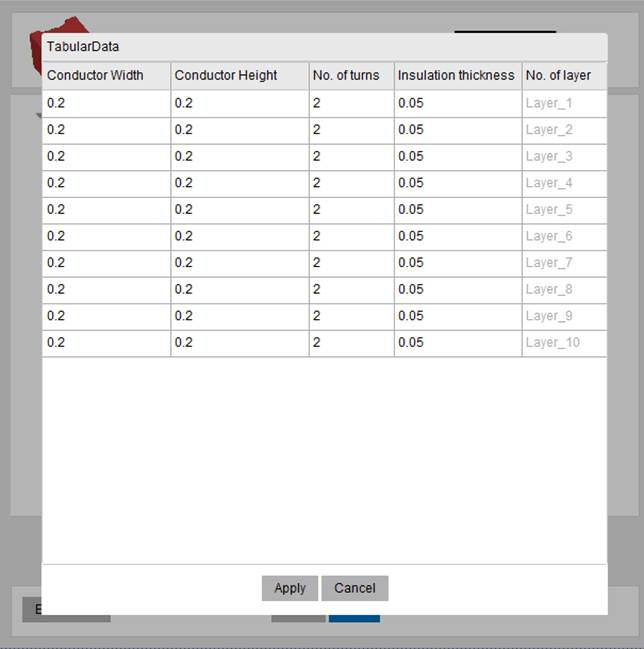

Electronic Transformer Extension Documentation
 © 2011 SAS IP, Inc. All rights reserved. Unauthorized use,
distribution or duplication is prohibited.
© 2011 SAS IP, Inc. All rights reserved. Unauthorized use,
distribution or duplication is prohibited.
Copyright and Trademark Information
© 2011 SAS IP, Inc. All rights reserved. Unauthorized use, distribution or duplication is prohibited. ANSYS, ANSYS Workbench, Ansoft, AUTODYN, EKM, Engineering Knowledge Manager, CFX, FLUENT, HFSS and any and all ANSYS, Inc. brand, product, service and feature names, logos and slogans are registered trademarks or trademarks of ANSYS, Inc. or its subsidiaries in the United States or other countries. ICEM CFD is a trademark used by ANSYS, Inc. under license. CFX is a trademark of Sony Corporation in Japan. All other brand, product, service and feature names or trademarks are the property of their respective owners.
Disclaimer Notice
THIS ANSYS SOFTWARE PRODUCT AND PROGRAM DOCUMENTATION INCLUDE TRADE SECRETS AND ARE CONFIDENTIAL AND PROPRIETARY PRODUCTS OF ANSYS, INC., ITS SUBSIDIARIES, OR LICENSORS. The software products and documentation are furnished by ANSYS, Inc., its subsidiaries, or affiliates under a software license agreement that contains provisions concerning non-disclosure, copying, length and nature of use, compliance with exporting laws, warranties, disclaimers, limitations of liability, and remedies, and other provisions. The software products and documentation may be used, disclosed, transferred, or copied only in accordance with the terms and conditions of that software license agreement. ANSYS, Inc. is certified to ISO 9001:2008.
U.S. Government Rights
For U.S. Government the users, except as specifically granted by the ANSYS, Inc. software license agreement, the use, duplication, or disclosure by the United States Government is subject to restrictions stated in the ANSYS, Inc. software license agreement and FAR 12.212 (for non-DOD licenses).
Third-Party Software
See the legal information in the product help files for the complete Legal Notice for ANSYS proprietary software and third-party software. If you are unable to access the Legal Notice, please contact ANSYS, Inc. Published in the U.S.A.
Overview of Electronic Transformer ACT
Overview of three required Input Panels
Circular (Valid only for wound transformers)
Primary and Secondary Definition.
Known issues, bugs, suggestions
Overview of Electronic Transformer ACT
The Electronic Transformer Extension is a customized solution for electronic transformers. These devices have a ferrite core (not laminated steel), typically operate in the 100kHz frequency range (with harmonics to low MHz) and have fewer than 200 turns total in the device. The ACT was built using Iron Python scripting and provides an easy-to-use interface to draw the geometry and setup a solution for a transformer or inductor. A database of basic topologies and materials for the commonly used cores is included in the ACT which allows users to choose the required shape and size of the core. In addition users can define their own winding strategy using Winding definition panel (Planar or Wound types) which enables automatic creation of all winding turns with rectangular or circular (only for wound type) cross section.
The ACT allows users to automatically setup an Eddy Current Solution with (or without) a Frequency Sweep Definition. The ACT considers the frequency dependent core permeability and core loss Steinmetz coefficients. The ACT also allows defining matrix connections (series or parallel) if required. Final setup can be completed through the script or outside the script. This solution process creates a frequency dependent R/L model which can be imported into ANSYS Simplorer as a Maxwell Dynamic Eddy Current component.
The Transformer Modeling script includes three input panels which must be filled out sequentially: Core Definition, Winding Definition and Analysis Setup.
The ACT is built for ANSYS Electronics Desktop 19.1. Please use the ACT with this or any version higher than this.
Read Input from file
If a model was created previously, a .tab data file can be read in to recreate the same model. Otherwise, the user can skip this button.

All data required by the three input panels (core definition, winding definition, and analysis setup) is automatically saved in a .tab delimited file (use tabs and/or spaces to split information, all data after % sign will be interpreted as comment and removed) in the same directory as the project file with every execution of the script. Once this file is available, users can click on the “Read Settings File” button and browse to the tab file location to it. After selecting, all previous inputs will be automatically added the panels.
In addition to information contained on three steps you can specify at the end of TAB file after percentage offset of the region either 0 (only to read data) or 1 (to create and setup design for you).
Example of the line:
1 %1 for run model after read; 0 - read file, manual click to invoke next steps (can be skipped)
The name of the .tab file is appended with project name and design name. This .tab file can be used for modification or recreating the design in subsequent analysis
Sample of .tab files are available in installation folder of an ACT. Copy and paste following path to folder explorer :
%USERPROFILE%\AppData\Roaming\Ansys\v191\ACT\extensions\ElectronicTransformer
Note: ACT Electronics Transformer supports importing TAB files created by ETK of version R19.0 and earlier. However, ACT TAB files cannot be used in earlier ETK versions.
The angle defined in the textbox will be used as the default segmentation angle for the geometry being created using the ACT. This value is used to segment major curvatures on core and winding. However fillets will not be segmented.
The default value is set to 0 degrees around 360 degree surface, that produces true surface geometry. The value of the segmentation angle must be 0 < angle < 20 degrees or 0 for true surface to avoid poor geometry representation.
|
|
|
|
|
Segmentation Angle: 0 deg (True) |
Segmentation Angle: 8 deg |
Segmentation Angle: 15 deg |


The ACT allows definition of geometry in “mm”.
Tip: If you use input file from previous version of toolkit values would be rescaled to mm.
The ACT contains a database of cores from several suppliers. Users can select the core supplier and then select the core type from available 15 topologies. For each core topology, different core models are provided for each supplier. The dimensions of the selected core model will be listed in the table, as shown below. Users can accept the core dimensions as displayed in the panel or manually modify them as per their requirements.
|
|
|
|
|
|
1. Select Supplier |
2. Select Core Type |
3. Select Core Model |
4. Modify Core Dimensions if required |


There are 15 core topologies currently supported by the ACT: E, EC, EFD, EI, EP, EQ, ER, ETD, P, PH, PQ, PT, RM, U, UI. These basic topologies are used frequently and are supplied by most of the manufacturers. The description of the dimensions of all these core topologies is given in below images.

In order to model an airgap in the core, user needs to select the “Define Airgap” checkbox. If this checkbox is checked, user will have option to define airgap on central leg or side legs or both. The user can enter the size of the airgap to be modelled and the specified airgap will be included in core geometry
Note: When an airgap is defined on the “Central Leg” or “Side Legs”, the overall dimensions of core remain unchanged (the airgap is created by removing material from the core at the specified leg.) However when airgap is defined as “Both”, the core halves are moved apart to add airgaps instead of removing material from core. Thus overall height of the core will increase.
|
|
||
|
Airgap On: Central Leg |
Airgap On: Central Leg |
Airgap On: Both |

Parameters related to winding specification are defined under the Winding Definition tab.
|
|
 |
|
General Winding Settings |
Settings of each layer |
|
|
|
|
Wound Transformer |
Planar Transformer |

The meaning and specification of all the terms under this tab are described below.
For planar transformer user can specify Bottom and Side margins. Bottom margin is a spacing between core and board if board thickness is specified, otherwise it is a spacing between core and first winding layer.
Side margin is a spacing between core central leg and winding.
For wound transformer user can specify Top and Side margins. Both margins are the spacing between core and the bobbin if bobbin thickness is specified. Top margins are spacing at top and bottom of the core while side margin is the spacing along the core center leg.
Layer spacing is the spacing between two adjacent layers of the core. This value can be zero or greater than zero.
Thickness of the bobbin or board on which winding is wound. If this value is set to zero, bobbin is not considered. If Bobbin Thickness is more than zero, the value is considered for positioning the winding even if include bobbin/board is unchecked.
Selecting this checkbox will model the geometry of bobbin for wound and board for planar transformers. If unchecked, bobbin/board thickness value is used to determine the position of windings while bobbin/board is not drawn explicitly.
Note: for planar transformer board will be drown for each layer
Total number of layers in the winding. Once the entry for number of layers is done, table below will be modified to facilitate entry of parameters for all layers.
Tip: when you increase number of layers it will copy the last row. If you have the same parameters for multiple layer, it would be easier to predifine parameters before increasing number of layers.
Wound (Concentric)Wound transformer means Concentric Layer style and that arrangement indicates that layers are arranged radially with layer number incremented radially outwards. Turns in each layer in this arrangement will be vertical (top to bottom). |
Planar (TopDown)Planar transformer means Topdown Layer style that arrangement indicates that layers are arranged from top to bottom in the core. Turns in each layer in this arrangement will be added radially outwards. |
|
|
|
|
Layer Type: Concentric |
Layer Type: TopDown |


When Conductor type is set to Rectangular, it is considered that cross section of the conductor is rectangular. Rectangular conductor definition will require following inputs
Conductor WidthWidth of the conductor to be specified Conductor HeightHeight of the conductor to be specified Number of TurnsNumber of conductor turns in each layer Insulation Thickness (Wound)Thickness of the insulation on the conductor. Even though insulation is not modelled geometrically, the value specified for insulation thickness will be considered for modelling location of the turns. Add insulation around the whole wire Turn Spacing (Planar)Spacing between conductors of one layer for planar transformers
|
|

When Conductor type is set to Circular, it is considered that the cross section of the conductor is Circular. Circular conductor definition will require following inputs
Conductor DiameterDiameter of the conductor to be specified Number of TurnsNumber of conductor turns in each layer Insulation ThicknessThickness of the insulation on the conductor. Even though insulation is not modelled geometrically, the value specified for insulation thickness will be considered for modelling location of the turns Number of SegmentsThe value specified in this column will be used to segment the circular conductor. The value specified should be greater than 8. Any value less than 8 is not permitted.
|
|

When all inputs on the “Winding Definition” panel are completed, the user can click on “Next” to create the model in Maxwell.
Parameters related to Analysis Setup are defined under “Analysis Setup” tab of the GUI. Once the geometry is drawn using “Draw windings” checkbox on winding Definition tab, the options on Analysis Setup tab will be enabled.
Select the ferrite core material and coil material (copper or aluminum) from the pull down menus.
In order to add a new core material, users can follow below steps
1. Make test run of the ACT to create geometry, this will create file folder Materials and file matdata.tab in personalLib folder defined in Electronics Desktop
2. Create a tab file for frequency versus permeability for the required core. Sheet Scan option available in Maxwell can help for creation of the tab fil.
3. Name the tab file same as the name of the material to be added
4. Place the tab file in that folder …\PersonalLib\Materials
5. Open “matdata.tab” file in Excel
6. Add a row for the material to be added and specify name and other material properties
7. Save the file with same name.
Once this is done, the material should be available for selection for next run of the ACT
Once all the winding layers are drawn, user needs to define which of the layers correspond to Primary winding and which layers will be considered as secondary winding. The definition of Primary and secondary will be used to define direction of current. Current Direction in secondary is assigned as opposite to Primary.
All layers listed in the dialog should be defined as either Primary or Secondary. Further operations will be enabled only after all layers are defined as Primary or Secondary.
Once Primary/Secondary definition is complete, the option to define connection will be enabled. This is an optional step which will allow users to define Winding Groups. The result of this operation will be same as the Post-processing operation in Matrix Definition window. The interface allows to group the winding together and also enables users to define name of the groups and number of parallel branches in the group.
The Frequency defined under Adaptive Frequency is sued for solving the fields with Adaptive mesh refinement. It is advisable to define highest frequency of the frequency range to be solved under the adaptive frequency. This ensures that the skin depths are resolved for all the frequency range to be solved.
The checkbox “Define Frequency Sweep” enables to setup a frequency range on which the results need to be computed. After the checkbox is checked, users can click on the button “Set” to define the frequency range to be solved. Users can Define Start and Stop frequency together with number of samples to be solved in that range. Further the sampling method can also be defined as Linear or Logarithmic.
Note: Frequency Sweep will be necessary if user is interested in System Simulation using State Space Model extracted from Maxwell solution.
The details mentioned under this section will be used to determine the level of accuracy required in the simulation.
The Percent Error allows you to control the desired solution accuracy. Smaller values produce more accurate (but slower) solutions.
The Maximum Number of Passes is the maximum number of mesh refinement cycles you would like Maxwell to perform. This value is a stopping criterion for the adaptive solution; if the maximum number of passes has been completed, the adaptive analysis stops even if the Error criterion is not achieved.
Regions offset specifies how far will pad region in all directions from the geometry. Specified in percent.
When all inputs on the “Analysis” panel are completed, the user can click on “Setup Analysis” to setup the model in Maxwell or click on “Analyze” to solve Maxwell and close the script.
The Working directory definition allows users to define location where the file will be saved. User should have permission to write in the specified directory.
By default the directory is pointed towards the Maxwell Project directory (Tools > Options > General Options) or the directory of the project in which the ACT is being executed. Users can either directly enter the path in the textbox or use the button adjacent to it and browse to the required folder.
In the version V1.1 there isn´t any known problem.
In case if you found a bug in extension and something working not properly, or you have a suggestion how to improve the Electronics Transformer ACT please contact one of the listed engineers: